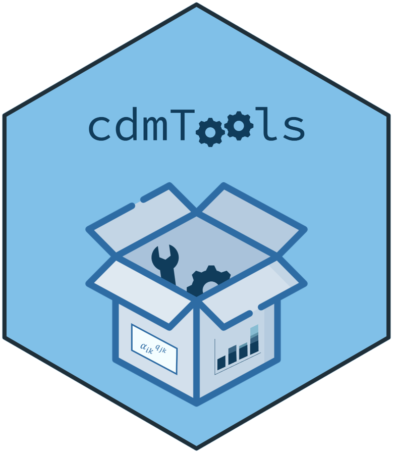

Projects
Research Projects
1. Computerized adaptive tests based on new assessment formats
- Role: Co-Principal Investigator (with Francisco J.
Abad)
- Timeline: 01/09/2023 – 31/08/2027
- Funding: €37,675, funded by the Spanish Ministry of Science and Innovation (Reference PID2022-137258NB-I00)
Research Team: Jimmy de la Torre, Pablo Nájera, Rodrigo S. Kreitchmann, María D. Nieto, Francisco J. Román, Iwin Leenen, Marcos Jiménez-Hernández, and Luis E. Garrido.
2. Study of statistical procedures for diagnostic evaluation in educational contexts
- Role: Principal Investigator
- Timeline: 01/01/2022 – 31/12/2023
- Funding: €7,358.66, funded by the Community of Madrid through the Pluriannual Agreement with the Universidad Autónoma de Madrid in its Programa de Estímulo a la Investigación de Jóvenes Doctores (Reference SI3/PJI/2021-00258)
Research Team: Francisco J. Abad, Jimmy de la Torre, Pablo Nájera, and Rodrigo S. Kreitchmann.
Software
R Packages
1. cdcatR
|
Role: Creator, Maintainer Description: An R package for cognitive diagnostic computerized adaptive testing. 
|

|
Citation: Sorrel, M. A., Nájera, P., & Abad, F. J. (2022). cdcatR: Cognitive Diagnostic Computerized Adaptive Testing. R package version 1.0.6. CRAN
Tutorial: Sorrel, M. A., Nájera, P., & Abad, F. J. (2021). cdcatR: An R Package for Cognitive Diagnostic Computerized Adaptive Testing. Psych, 3(4), 386–403. DOI
2. cdmTools
|
Role: Creator Description: Useful tools for cognitive diagnosis modeling.
|
 |
Citation: Nájera, N., Sorrel, M. A., & Abad, F. J. (2022). cdmTools: Useful Tools for Cognitive Diagnosis Modeling. R package version 1.0.5. CRAN
3. GDINA
|
Role: Contributor Description: An R package for cognitive diagnosis modeling in the generalized DINA model framework.
|
Citation: Ma, W. & de la Torre, J. (2020). GDINA: An R Package for Cognitive Diagnosis Modeling. Journal of Statistical Software, 93(14), 1–26. DOI Tutorial: Shi, Q., Ma, W., Robitzsch, A., Sorrel, M. A., & Man, K. (2021). Cognitively diagnostic analysis using the G-DINA model in R. Psych, 3(4), 812-835. DOI
Computer Programs and Apps
1. FoCo
|
Role: Creator, Maintainer, Project Coordinator Link: FoCo App Description: A Shiny app for formative assessment and self-evaluation of competencies. Traditional educational assessment has been focused almost exclusively on rank-odering (e.g., Student A < Student B < Student C). Formative assessment aims to provide specific feedback to facilitate remedial instruction (e.g., Student A masters competency 1, but not 2 and 3; Student B masters competencies 1 and 2, but not 3…). To facilitate these applications we generated a Shinny app that allow for cognitive diagnosis modeling applications. |
|
Citation and tutorial: Sanz, S., Kreitchmann, R. S., Nájera, P., Moreno, J. D., Martínez-Huertas, J. Á., & Sorrel, M. A. (2023). FoCo: A Shiny app for formative assessment using cognitive diagnosis modeling. Psicología Educativa, 29(2), 149-158. DOI
2. cdcatS
|
Role: Co-Author Link: cdcatS App Description: A Shiny app for nonparametric CD-CAT implementations. |
|

3. FCoptimization
|
Role: Co-Author Link: FCoptimization App Description: A genetic algorithm for optimizing pairwise forced-choice questionnaires. |
Citation: Kreitchmann, R. S., Abad, F. J., & Sorrel, M. A. (2021). A Genetic Algorithm for Optimal Assembly of Pairwise Forced-Choice Questionnaires. Behavior Research Methods. DOI